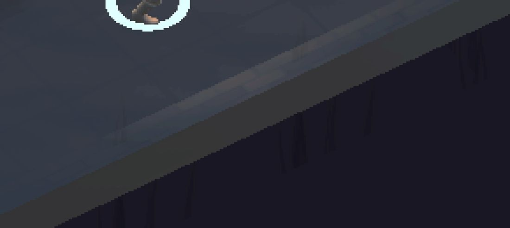
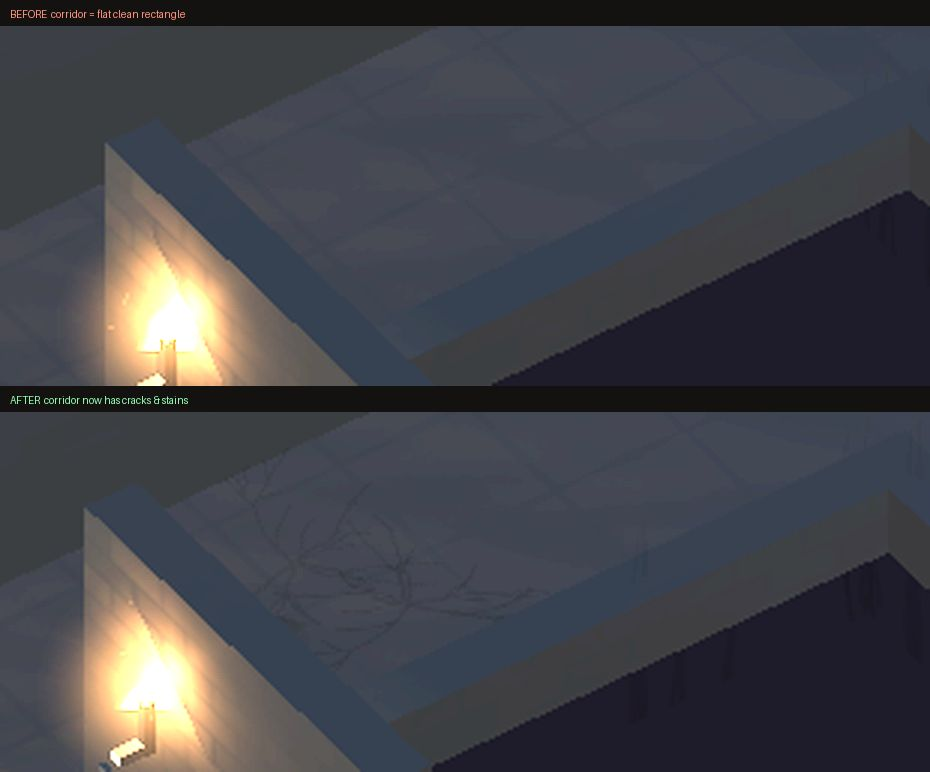
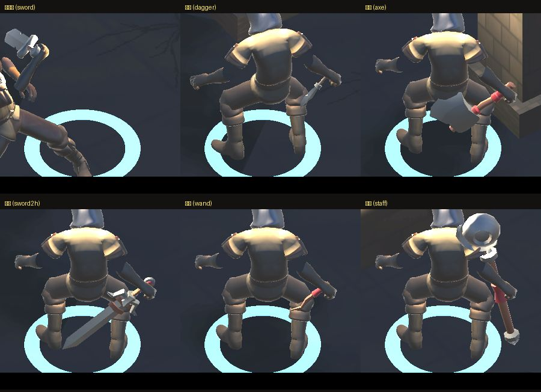

地城迴響 · 地板異常與武器握姿
這一頁是三件事的結果：①地板矩形亮塊找到真正原因並修好 ②六把武器握姿修正後的驗收 ③（順帶）實機閃退的根因。①②已經 commit，還沒出 TestFlight，等你看完確認再決定。
你描述的是：石造走廊／門口附近，火把在地面照出的暖色亮斑裡，疊著一塊邊緣銳利、偏冷灰白、矩形帶一個斜切角的圖案。下面這張是我在模擬器重現到的同一塊東西。

不是貼圖錯位、不是誤植的 debug 圖形、也不是特效殘留。是這一行：
foreach (var r in Floor.Rooms) Furnish(r);
裝飾流程只對「房間」呼叫，走廊從來沒有被裝飾過。房間地板鋪了污漬貼花（裂痕、霉斑、水漬，用相乘混合把地板壓暗），走廊維持乾淨的原色。於是走廊在畫面上就是一塊比周圍亮、邊緣完全筆直的矩形；而等角視角讓矩形的角看起來像被斜切掉一塊，也就是你說的「像旗幟或箭頭的一角」。
它只在門口／走廊附近出現、只在被火把照到時看得見——跟你描述的位置與條件完全吻合。
前三輪我都猜錯了，寫下來提醒自己：猜過「貼花 shader 載不到退回不透明白色」（log 證實 shader 正常）、猜過蜘蛛網（那是 0.018 公尺粗的細絲，不是實心塊）、用「冷色像素」自動找（判準太寬，抓到的是整片冷色調的牆）。三次都是從畫面回推它可能是什麼。最後改成反過來問畫面：加一支不受光的純色 shader，同一個機位拍兩張，一張是遊戲畫面、一張把每個物件塗成獨一無二的顏色，直接讀那塊像素查出它是誰——一次就中。
補上走廊的污漬，而不是把房間的拿掉：接縫之所以顯眼是因為兩邊的髒污密度不一樣，補齊才會連成一片。走廊密度刻意比房間低（它本來就是通道），牆腳積垢也一起補。

根因是一個系統性偏差，不是六把武器各自的問題：hand_r 這根骨頭的原點在手腕而不是掌心，差了 12 公分。所以六把武器都是「拳頭落在護手上方、真正的握把整段露在拳頭外面」，看起來就像反手拿。修法是一個常數，六把一起套用。

法杖是六把裡我最沒把握的一把。它在修正前看起來就還可以，套上同一個補償值之後握點偏高了一點。目前看起來仍然自然，但如果你覺得法杖握太上面，這一把可以單獨退回原值——其餘五把不受影響。
你回報的閃退不是地上掉落物太多。換樓層時掉落物本來就會被清掉，實測連下 26 層，地上物件全程 0～4 個。真正的原因是換樓層時貼圖、網格、材質沒有被回收——銷毀場景物件不會回收它引用的資產。
| 項目 | 修正前（第 26 層） | 修正後（第 26 層） |
|---|---|---|
| 貼圖 | 1571 張 / 904 MB | 123 張 / 143 MB |
| 網格 | 8818 個 / 5686 MB | 1429 個 / 517 MB |
| 材質 | 4564 個 | 1358 個 |
| 總配置記憶體 | 3430 MB | 758 MB |
iPhone 大約 2GB 上限：修正前約第 16～18 層撞牆（跟「打到一定深度就閃退」吻合），修正後同樣的量要到第 70 層左右。
還有殘留約 19MB/層沒清乾淨。來源是每隻骷髏烘出來的骨架網格，以及走廊／房間裝飾的合併網格。沒有一起處理，是因為骨架網格的綁定姿勢跟該實例當下的骨頭矩陣有關，快取的風險比前面三項高，我不想在修閃退的同一輪順手改。無盡模式跑很深仍可能中——要處理的話我再單獨做一輪。
另外我沒有拿到這次的 crash log。上面的結論是量出來的，不是從 log 讀的（兩者一致，但不是同一份證據）。要 100% 確認終止原因是記憶體不足，麻煩接上 iPhone，Xcode → Window → Devices and Simulators → View Device Logs，撈最新那筆 ProductName 給我。
| 要決定的 | 為什麼不能我自己決定 |
|---|---|
| 法杖握點要不要退回原值 | 其餘五把是「明顯錯 → 明顯對」，法杖是「本來就還行 → 換個位置也還行」。這是美術偏好不是對錯，看你要法杖握中段還是握上段 |
| 走廊污漬的濃度 | 目前設得比房間低（走廊是通道不是墓室）。調高會更連貫但走廊會變得跟房間一樣髒，失去「這裡只是過道」的區別 |
| 殘留 19MB/層 現在處理還是之後 | 取決於你預期玩家會在無盡模式跑多深。到第 70 層才會撞牆，如果實際沒人跑那麼深就不值得冒風險動骨架網格 |
| 要不要出 TestFlight | 閃退是你回報的，最終要在真機上才算數——但你說先看截圖，所以我沒有出 |